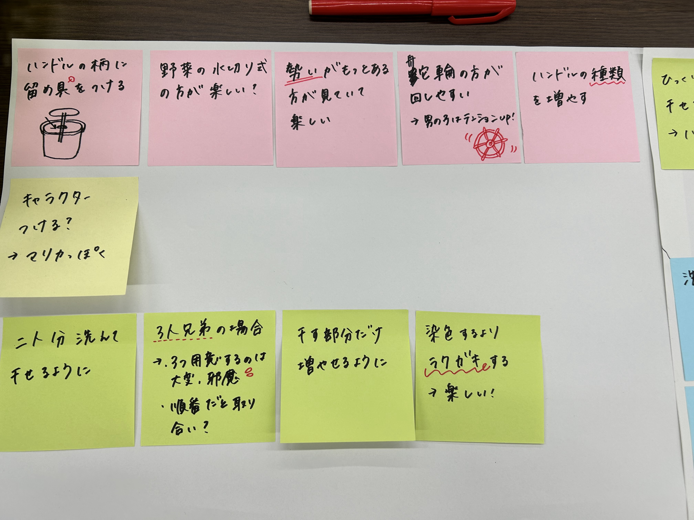
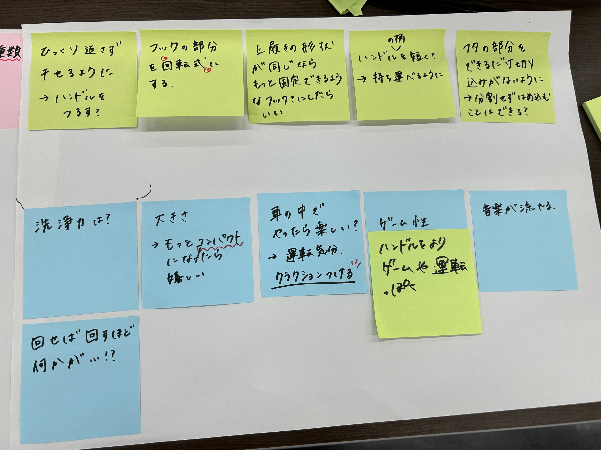

★発表
鎌倉市へ
10月19日、制作したものを持って鎌倉市の商工会議所へ。
流れとしては、各グループの制作物の紹介→鎌倉市民の皆さんからのフィードバック・意見交換を行った。
動画まとめのページ
市民の皆さんと意見を交換し、出てきたものを付箋にまとめた。（グルグルウォッシャーを担当）


グルグルウォッシャーは子供向けのものなので、実際に小学生の子達にも実践してもらったが、とても楽しそうで、
「これだったら上履き洗える？」というお母さんの声に、「できるかも！！！」と返す場面があった。
この製品は、洗浄力が正直期待できない仕様になってしまっているが、本来の目的は「洗う習慣を身につけること」だと思うので、
大成功だと思う。